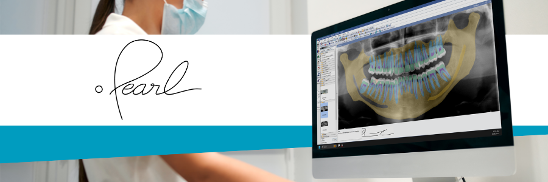

Pearl Second Opinion is integrated into the Open Dental Imaging Module.
Open Dental's integration with the Pearl Second Opinion product allows users to detect potential conditions in dental radiographs. Easily view detections when taking or storing images in the Imaging Module.
First, sign up with Pearl at their website: hellopearl.com.
Once signed up, Pearl will provide the necessary details to set up the Pearl bridge.
When an image is taken or stored in the Open Dental Imaging Module, the image can be automatically or manually processed by Pearl Second Opinion.
View layers, annotations, and detections as you review patient images right from the Imaging Module.

Pearl's Second Opinion is dentistry's most powerful and comprehensive FDA-cleared clinical AI software. It delivers real-time chairside radiologic detections of decay, infection and numerous other conditions--upping dentists diagnostic accuracy by as much as 37% and presenting x-ray findings to patients with visual clarity and objective credibility. Second Opinion is a win-win for doctor and patient alike, elevating clinical outcomes, building patient trust and boosting case acceptance.